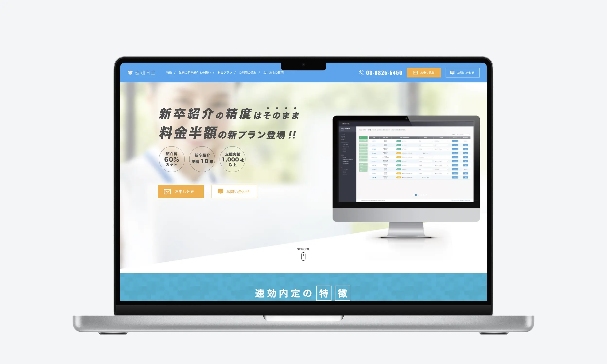
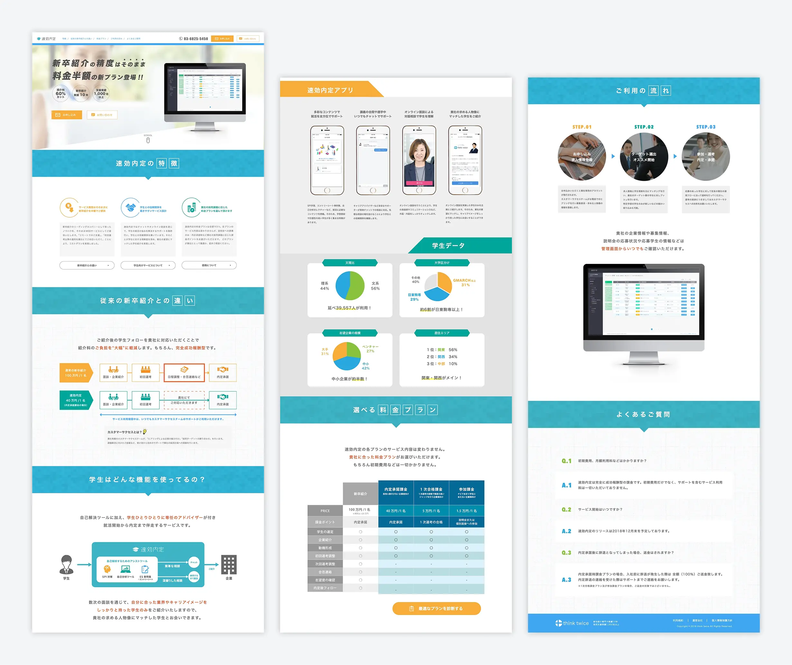

就活アプリ紹介LP制作
- LP
- 実務案件

就活アプリ紹介LP制作に、Webデザイナー兼コーダーとして携わりました。
- カテゴリー：Webデザイン、LP制作
- 制作種別：実務案件
- 担当領域：ヒアリング、設計、デザイン、実装
- 使用ツール・言語等：Figma, HTML&CSS, Sass等
- 制作期間：2ヶ月
プロジェクト概要
本プロジェクトは、就活支援アプリの新規開発に伴う、BtoB（企業向け）ランディングページ（LP）の制作案件です。体制はディレクター1名、デザイナー兼コーダー1名（自身）の計2名で進行しました。 当プロジェクトにおける私の担当は、競合調査、情報設計（IA）、UIデザイン、およびフロントエンド実装です。
従来、当サービスは営業活動を中心に導入を促しており、Webサイト経由のコンバージョンが不十分である点が課題でした。特に本LPのターゲットは就活生ではなく、企業の採用人事担当者や経営層です。オンライン上でサービスの仕組みや導入メリットを正しく理解してもらい、ビジネスゴールである「問い合わせ件数の増加」から企業導入数の拡大へ繋げるため、プロジェクトが始動しました。
アプローチ
ヒアリングで整理したサービスの優位性とターゲット課題を起点に、競合分析に基づく「利益提示 ➔ 根拠 ➔ 信頼性」の心理ステップに沿った情報構造を設計しました。 図解を用いた視覚的なUIデザインと、プロトタイプによるCVR最適化の検証・微調整を重ねることで、従来の営業依存からWeb経由での顧客獲得を加速させるLPとして構築・実装しました。
最終成果物

成果・実績
営業活動に依存していた従来の導入経路に対し、本LPの公開後はWebサイト経由での問い合わせ、および導入数が大きく増加したとの報告をクライアントよりいただきました。 具体的なコンバージョン数値はクライアント側の情報管理により非公開ですが、オンライン上でサービスの利用メリットや仕組みが明快に伝わるようになり、見込み顧客獲得において重要なチャネルとして機能していると高い評価をいただいています。
デザインプロセス
デザインは以下のプロセスで進めました。
- ヒアリング
- 競合分析
- 情報設計
- ワイヤーフレーム
- ビジュアルデザイン
- 検証改善
ヒアリング
本プロジェクトは、従来営業活動を中心に顧客獲得を行っていた体制から、Webサイト（LP）を経由した新規顧客の獲得強化を目指してスタートしました。
プロジェクトの初期段階としてクライアントとのヒアリングを実施し、ターゲット像、既存のユーザー課題、そして本サービスの強みについての前提条件を共有・整理しました。 ターゲットは、既存の新卒紹介サービスの「紹介料の負担が重い」「求めている人材が効率的に紹介されない」といった課題を抱え、より低コストで積極的な採用アプローチができる別サービスを検討している企業の人事担当者や経営層でした。 これに対し、本サービスには「他社を圧倒する低水振な紹介手数料」「ニーズに応じた細かなプラン設定」「日常的な学生サポートによる高いエンゲージメントと高精度なマッチング力」という明確な優位性があることを確認しました。
これらのヒアリング内容を踏まえ、Web施策としての最重要KPIを「LPを閲覧した採用担当者や経営層にサービス価値を伝え、アプリへの登録や導入検討の問い合わせ（CV）を増やすこと」と定義し、以降の具体的な設計プロセスへと着手しました。
競合分析と情報設計
設定したKPIを達成するため、まずは市場における競合サービスのLP構成や掲載順序、訴求フレーズの分析を行いました。 その結果、成約率の高いLPは一様に「プロダクトがもたらす具体的利益の提示 ➔ それを実現できる根拠（機能・特徴） ➔ サービスの信頼性と安全性の提示」という心理ステップを踏んだ構成になっていることが判明しました。
この競合パターンとターゲットのカスタマージャーニーを掛け合わせ、問い合わせへの心理的ハードルを下げる情報設計を行いました。 ファーストビューで強みとメリットを端的に伝えるキャッチコピーとCVボタンを配置し、続いて導入メリット、他社との差別化ポイント、サービス詳細、料金プランを順に展開しました。 さらに、利用の流れやよくある質問（FAQ）を配置することで、導入後のイメージを具体的かつクリアに可視化させる構成を整理しました。
ワイヤフレームとビジュアルデザイン
確定した情報構造に基づきワイヤーフレームを作成し、掲載する各要素の配置と具体的なコピーライティングの精緻化を進めました。 ターゲットである人事担当者が短時間でサービス価値を理解できるよう、訴求力の高いフレーズ選定を徹底しました。
ビジュアルデザインの制作においては、アプリ本体のブランドトーン＆マナーを踏襲しつつ、テキスト中心になりがちな情報を視覚的に解釈できるよう図解やインフォグラフィックを多用しました。 要素の優先順位に合わせたメリハリのあるレイアウトを構築し、ストレスなくスクロールできる洗練されたUIへと昇華させました。
検証改善・実装
デザインカンプの完成後、画面の美しさだけでなく「CVRの最適化が達成されているか」という観点からプロトタイプを用いた最終検証を実施しました。 ファーストビューにおけるキャッチコピーの視認性や、CVボタン（CTA）の配色・マイクロコピーが視線誘導の妨げになっていないかを多角的にチェックし、微調整を加えました。
検証を経てブラッシュアップしたデザインデータをもとに、HTML/CSS等を用いてWeb実装を行いました。
振り返り
本プロジェクトはターゲットである企業の人事担当者や経営層のニーズが明確であったため、一般ユーザー向けのデザインと比較して、訴求すべきポイントや必要なコンテンツの絞り込み、および情報設計がスムーズに行えるという実感を得ました。
一方で、小規模かつ短納期、そして納品をもって完了となる請負契約の案件であったため、限られたリソースと時間の制約の中で、最大限の効果を発揮できるクオリティをいかに追求するかという難しさもありました。限られた条件下で最善を尽くし成果を出せたことは自信になりましたが、デザイナーとしては、公開後もユーザーの反応やデータをもとに継続的な改善を重ね、コンバージョン率をさらに引き上げていくようなアプローチにも挑戦したかったという点が、今後の視点として残る経験となりました。